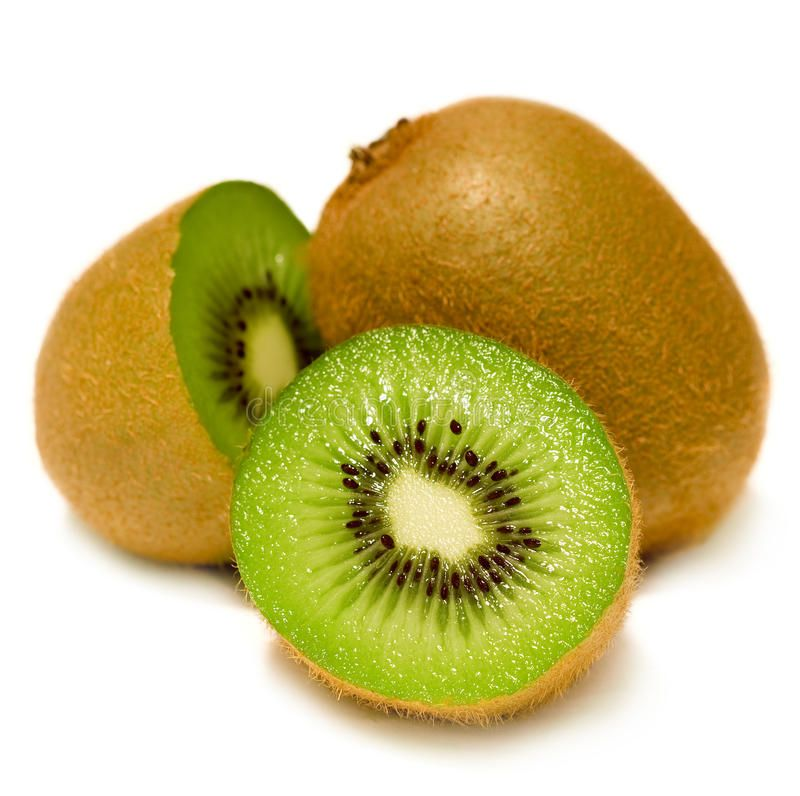

Kiwi

| Index |
|---|
| Short description |
| Nutritional value |
| Health benefits |
| Best time to eat |
| Who shoud avoid |
| Fun fact |
Short Description
Kiwi is a small fruit with brown fuzzy skin and bright green flesh. It has a tangy-sweet taste and is rich in vitamins and antioxidants. Kiwi is widely grown in temperate regions.
Nutritional Value
| Nutrient | Amount |
|---|---|
| Calories | 61 kcal |
| Carbohydrates | 15 g |
| Dietary Fiber | 3 g |
| Vitamin C | 93% |
| Potassium | 312 mg |
| Vitamin E | Present |
Health Benefits
- Boosts immunity strongly
- Helps regulate blood pressure
- Improves digestion
- Supports heart health
- Improves skin quality
Best Time to Eat
Kiwi is best eaten in the morning or as a mid-day snack.It aids digestion and improves nutrient absorption.
Avoid eating kiwi:
- On an empty stomach if you have acidity
- Late at night
Best practice: Eat after meals or as a snack.
Who Should Avoid
- People with acidity or mouth ulcers
- Those allergic to kiwi
- Latex-allergic individuals
Fun Fact
- Kiwi contains more vitamin C than oranges
- Kiwi was originally called the Chinese gooseberry
- Kiwi seeds are edible